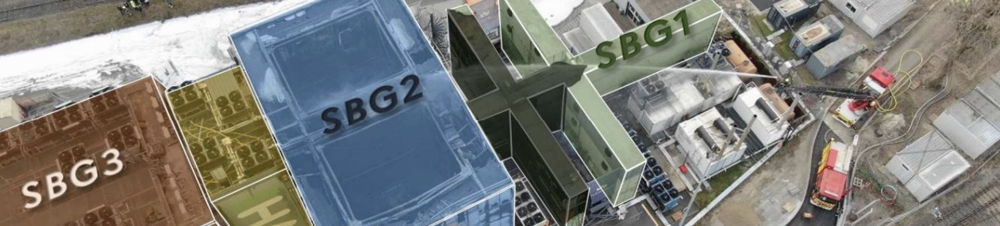

Technical & Safety Analysis
The fire at the OVHcloud Strasbourg campus was traced back to an electrical malfunction inside the SBG2 data center, likely originating from an uninterruptible power supply (UPS) system that had undergone maintenance earlier the same day. Initial reports indicated that one of the UPS units had been restarted shortly before the incident, and investigators later confirmed that the fire spread rapidly through the building due to the presence of combustible materials and the absence of an automatic fire suppression system. Unlike many modern data centers, SBG2 did not rely on inert gas extinguishing technology or sprinklers, meaning the fire was able to escalate before firefighters arrived on site.
Technical investigations also showed several structural and design vulnerabilities that increased the extent of the damage. The building's construction was of a modular "container-style" with tightly packed server racks and little compartmentalization that allowed the fire to spread quickly from room to room. Secondly, OVHcloud's strategy of hosting numerous data centers within the same campus without complete logical or power isolation led to the inevitable, forced shutdown of even SBG3 and SBG4, which were not directly damaged. This safety-driven shutdown caused a secondary outage, showing how physical and logical dependencies can amplify the impact of a single point of failure.
Once the fire was contained, OVHcloud engineers began assessing the remaining infrastructure and performing staged reboots of the unaffected systems. However, since SBG2 was completely destroyed, recovery was limited to customers with off-site backups or multi-region configurations. Later, OVHcloud acknowledged that the site had not met the modern standards for fire resilience and pledged to reassess how it designed any future facilities for better compartmentalization, automatic suppression, and more stringent disaster recovery policies. The incident highlighted the often-overlooked fact that cloud failures are not always caused by cyberattacks or software faults — physical infrastructure and safety engineering remain equally critical.
